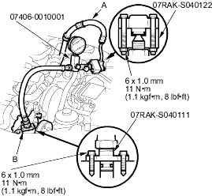
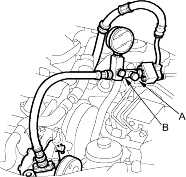

- P/S joint adapter (pump), 07RAK-S040111
- P/S joint adapter (hose), 07RAK-S040122
- P/S pressure gauge, 07406-0010001
Check the fluid pressure as follows to determine whether the trouble is in the pump or gearbox.
- Check the power steering fluid level (see page 17-25) and pump belt tension (see page 17-23).
- Disconnect the pump outlet hose (A) from the pump outlet with care so as not to spill the power steering fluid on the frame and other parts. Install the P/S joint adapter (pump) on the pump outlet (B).

- Connect the P/S joint adapter (hose) to the P/S pressure gauge, then connect the pump outlet hose (A) to the P/S joint adapter (hose).
- Install the P/S pressure gauge to the P/S joint adapter (pump).
- Fully open the shut-off valve (A).

- Fully open the pressure control valve (B).
- Start the engine and let it idle.
- Turn the steering wheel from lock-to-lock several times to warm the fluid to operating temperature at 70oC (158oF).
- Measure steady-state fluid pressure while the engine is idling. If the pump is in good condition, the gauge should read at least 690 - 1,500 kPa (7 - 15 kgf/cm2, 100 - 214 psi). If it reads high, check the outlet hose or valve body unit (see Steering System Troubleshooting).
Raise the engine speed to 3,000 rpm, and measure the fluid pressure. If the pump is in good condition, the gauge should read at least 290 - 1,100 kPa (3 - 11 kgf/cm2, 43 - 156 psi). If it reads high, repair or replace the pump. - Lower the engine speed and let it idle. Close the shut-off valve, then close the pressure control valve gradually until the pressure gauge needle is stable. Read the pressure.

Do not keep the shut-off valve closed more than 5 seconds or the pump could be damaged by over-heating. - Immediately open the pressure control valve fully.
If the pump is in good condition, the gauge should read at least 7,600 - 8,300 kPa (78 - 85 kgf/cm2, 1,110 - 1,210 psi). A low reading means pump output is too low for full assist. Repair or replace the pump.